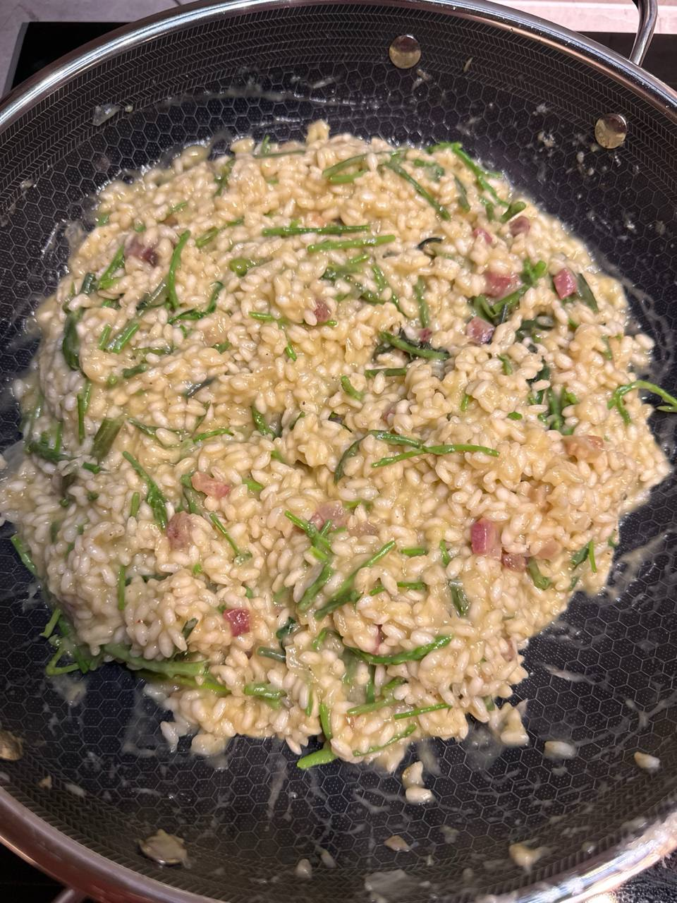

Ovo je recept zapisan iz tvog feedbacka: šparoga ostaje blanširana, svježa i čvrsta, a cijeli tanjur ide na kontrast između zelenog, masnoće i sira.

Za tebe ostaje default: vrhovi šparoga samo blanširani i hrskavi. Za publiku koja voli mekše, možeš dio vrhova ostaviti malo duže u vodi ili ubaciti blaži balans uz šparogu.